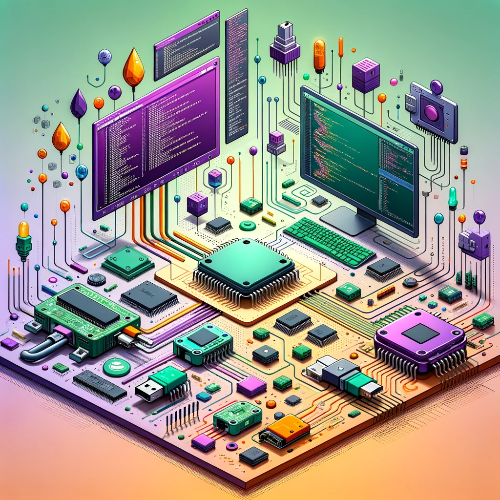
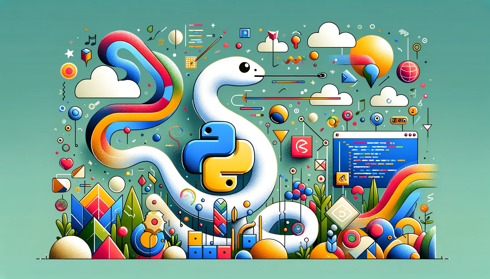

Initiation à la programmation physique
Programmation physique
La programmation physique, qui consiste au développement du logiciel qui contrôle le fonctionnement d’un microcontrôleur, est un outil essentiel dans la fabrication de matériel adapté. Elle permet la création de switchs numériques, (définition ici) qui est pertinente à envisager dans une multitude de contextes. Sur le plan de la créativité, ces appareils offrent un éventail de possibilités novatrices, rendant les technologie adaptées accessible à un large éventail d’individus, y compris ceux aux capacités diverses. Les personnes avec une force manuelle limitée, par exemple, peuvent tirer avantage de capteurs de proximité (tels que l’infrarouge ou les ultrasons) qui nécessitent moins d’effort physique qu’un bouton traditionnel. Dans le cas d’une motricité limitée au niveau des bras ou des jambes, une switch de type Sip and Puff (souffle et aspiration) peut donner un accès intéressant grâce à un senseur barométrique. Des senseurs de flexion, intégrés à un gant ou à un autre accessoire couvrant une articulation, permettent de détecter des mouvements subtils et ciblés. Finalement, la programmation physique permet aussi de réaliser des projets technologiques autres que des switchs adaptées. Par exemple, nous avons créé un clone du hitch 2.0, qui permet un accès à un PC windows pour 5% à 10% du prix d’un appareil commercial grâce à cette technologie. Cet article offre une vue d’ensemble sur la programmation physique et son potentiel. L’objectif n’est pas de fournir un tutoriel complet permettant l’apprentissage de la programmation, mais bien une vue d’ensemble en démontrant les principes de base. Des ressources supplémentaires (en anglais) seront suggérées en conclusion si cette lecture soulève l’envie d’approfondir davantage. Vous pouvez aussi nous contacter si vous avez besoin d’accompagnement dans la création de matériel adapté en lien avec la programmation.
Choix de langage de programmation
Lorsqu’il s’agit de concevoir un accès via la technologie numérique, la première étape consiste à sélectionner les technologies qui vont être utilisées dans le projet. De façon générale, trois choix doivent être faits en amont afin d’orienter le processus: le type de senseur, le microcontrôleur et le langage de programmation. Ces décisions préliminaires définissent la trajectoire du projet, influençant tous les aspects subséquents du design. Les différents types de senseurs sont abordés plus haut et, dans le cadre de ce texte, le microcontrôleur de prédilection sera le raspberry pico, en raison de sa polyvalence et de son abordabilité (6 à 7 dollars). 
Au niveau du langage de programmation, diverses options sont possibles. Le choix se fait principalement en fonction de l’expérience du programmeur. Les langages qui seraient optimaux en termes de performance seraient le C/C++ ou l’Assembly. Cependant, ce sont des options complexes et qui sont devenues moins pertinentes au cours des dernières années, à mesure que la performance des microcontrôleurs s’est améliorée et que le besoin de les optimiser à 100% a disparu, à tout le moins dans les applications qui nous intéressent. Dans le contexte des projets de switchs numériques, trois langages de programmation se démarquent.
- Micropython: c’est une implémentation complète de Python 3 optimisée pour les microcontrôleurs. Il vise à s’approcher de son langage d’origine tout en mettant en place un ensemble d’outils spécifiquement conçus pour l’utilisation sur des appareils à faible puissance. Il est compatible avec une grande quantité d’appareils et serait idéal pour une personne ayant de l’expérience en programmation Python ou d’autres langages orientés objet.
- Arduino: cette plateforme est basée sur le C/C++ et est largement utilisée dans le monde des microcontrôleurs. Son utilisation offre une plus grande performance que les langages basés sur Python. Toutefois, elle présente une courbe d'apprentissage plus prononcée. La communauté derrière les projets faisant appel à cette technologie est significativement plus grande que celle de ses compétiteurs. L’IDE (Integrated Development Environment), qui est un outil permettant d’utiliser un langage de programmation et le mettre en application, offre moins de fonctions de débogage que les autres options et est plus complexe d’utilisation.
- Circuitpython: c’est une variation de micropython ayant comme objectif de rendre la programmation plus accessible pour les développeurs amateurs. Il est développé par Adafruit, une entreprise américaine qui est très proche de la communauté des créateurs. Ce langage met l'accent sur l'accessibilité et l'interaction avec le matériel, se prêtant particulièrement bien aux projets d'interface homme-machine. Il comporte d’autres avantages tel que la possibilité de tester rapidement du code à l’aide du REPL sur l’IDE Mu (i.e. une façon de tester instantanément et facilement des changements de la programmation), ce qui est particulièrement pertinent en programmation physique.
En résumé, bien que Arduino et MicroPython conviennent aux développeurs aguerris en C/C++ ou Python 3, CircuitPython présente de nombreux avantages, notamment en termes d’accessibilité et de convivialité pour les projets interactifs. C’est la raison pour laquelle nous privilégions ce langage dans nos initiatives. Pour illustrer son application, considérons la création d’une switch numérique activée par le mouvement, réalisable pour moins de 15 dollars de matériel.
Exemple: switch qui détecte le mouvement
D’abord, avant de pouvoir programmer, il est nécessaire de choisir un éditeur de code. C’est un logiciel qui vient faciliter la programmation. En théorie, du code pourrait être écrit comme un simple fichier de texte (e.g. sur wordpad) mais certains outils offrent un ensemble de fonctionnalités qui facilitent grandement le processus. Pour circuitpython, Mu editor est le meilleur choix, il offre une interface simple, permet de sauvegarder le code directement sur le microcontrôleur et donne accès à des fonctionnalités pour tester le code. Il est d’ailleurs endossé par Adafruit, voici donc le lien pour le télécharger.
Le processus de programmation d’une switch numérique, illustré par l’exemple d’un modèle utilisant un capteur de proximité, est détaillé ci-bas. L’exemple de circuit présenté dans le texte sur le principe de fonctionnement des switchs adaptées est repris. Parmi la variété de capteurs disponibles, le KY-032 se distingue par son efficacité et sa fiabilité et est accessible à un coût modique de deux à trois dollars via Aliexpress. Pour faciliter la compréhension, le code sera divisé en quatre phases claires. Il est important de souligner que la programmation est effectuée en anglais, ce qui est la norme dans le domaine. Pour ceux désireux d’approfondir leur compréhension des termes techniques employés, une sélection de ressources sera disponible à la conclusion de l’article.
Parmi la variété de capteurs disponibles, le KY-032 se distingue par son efficacité et sa fiabilité et est accessible à un coût modique de deux à trois dollars via Aliexpress. Pour faciliter la compréhension, le code sera divisé en quatre phases claires. Il est important de souligner que la programmation est effectuée en anglais, ce qui est la norme dans le domaine. Pour ceux désireux d’approfondir leur compréhension des termes techniques employés, une sélection de ressources sera disponible à la conclusion de l’article.
Bibliothèques
Les bibliothèques sont des fonctions ou des routines préprogrammées. Elles permettent aux différentes parties du code de fonctionner de manière adéquate. Sans elles, le code ne fonctionnera pas et le programme retournera une erreur. Par exemple, la bibliothèque time est cruciale pour introduire des délais dans l'exécution du code, permettant, entre autres, de retarder l'activation d'une switch numérique pendant un intervalle défini après son déclenchement. Il en va de même pour pratiquement toutes les fonctions utilisées dans le code. Ainsi, sans les bibliothèques, le code ne sera pas fonctionnel. Certaines sont intégrées dans le logiciel circuitpython (comme celles utilisées pour notre exemple) dû à leur utilisation fréquente et répandue. Cependant, certaines bibliothèques plus spécifiques doivent être téléchargées et transférées dans le dossier lib du microcontrôleur. Ainsi, les premières lignes de notre code vont consister en l’importation des bilbiothèques nécessaires au bon fonctionnement du programme (board permet d’accéder à l’appareil, digitalio permet de contrôler les entrées et sorties numériques et time permet la gestion du temps).import board
import time
from digitalio import DigitalInOut, Direction, Pull
Initialisation du matériel
Pour que le microcontrôleur interagisse avec les capteurs, relais, et autres composants externes, il est essentiel de spécifier dans le code quels sont les périphériques connectés et leur configuration. Cette étape d’initialisation définit le rôle de chaque composant (entrée ou sortie) et prépare le système à traiter les informations reçues ou à envoyer des commandes. Ainsi, le microcontrôleur reçoit l’information du senseur (qui est donc un input) et envoie la consigne de s’activer au relais (qui est donc un output). L’endroit où les composantes sont connectées (voir l’image ci-haut) est aussi indiquée à cette étape. Dépendamment du dispositif, d’autres paramètres peuvent être nécessaires au niveau de l’initialisation, ce qui ne concerne pas cet exemple.
sensor = DigitalInOut(board.GP22)
sensor.direction = Direction.INPUT
relay = DigitalInOut(board.GP0)
relay.direction = Direction.OUTPUT
Définir les fonctions et les variables
Structurer le code à l’aide de variables et de fonctions augmente sa lisibilité, facilitant la maintenance et l’adaptabilité. Les variables sont une façon d’emmagasiner une donnée, qui pourra être modifiée de différentes manières, et de l’utiliser dans la programmation. Dans notre cas, nous allons consigner le temps pendant lequel l’appareil s’activera. La variable sera statique, c’est-à-dire que l’utilisateur ne pourra pas la modifier. Cependant, il serait possible d’ajouter un bouton qui permettrait de modifier cette variable, ce qui changerait le temps pendant lequel le relai s’active (qui pourrait ressembler à un bouton de volume à tourner pour diminuer ou augmenter le volume sur l’appareil). Les fonctions, quant à elles, permettent de simplifier le code en regroupant des instructions répétitives, rendant le programme plus performant et organisé. Dans cet exemple, il y a seulement une fonction, mais un appareil adapté pourrait en utiliser plusieurs dizaines. Ici, la fonction transmet l’information à l’appareil que si le senseur détecte un mouvement, il doit activer le relai pendant le temps, en secondes, consigné dans la variable activation_time.
activation_time = 5
def relay_activation:
if sensor.value:
relay.value = True
time.sleep(activation_time)
relay.value = False
Boucle principale
La logique principale du dispositif s’exécute continuellement dans cette boucle. Cela signifie que le système vérifie en permanence l’état des capteurs et active les relais selon les conditions programmées. Tout ce qui est en dessous de l’instruction while True va être exécuté tant que l’appareil ne présente pas de problème et est alimenté en énergie. Cette répétition assure que le dispositif reste opérationnel et réactif à son environnement. À cette étape, il faut s’assurer que les instructions soient efficientes afin de limiter l’impact de leur exécution sur la performance du dispositif.
while True:
relay_activation()
Code final
Voici le résultat final de cet exercice, en un bloc:
import board
from digitalio import DigitalInOut, Direction, Pull
import time
sensor = DigitalInOut(board.GP22)
sensor.direction = Direction.INPUT
relay = DigitalInOut(board.GP0)
relay.direction = Direction.OUTPUT
activation_time = 5
def relay_activation():
if sensor.value:
relay.value = True
time.sleep(activation_time)
relay.value = False
while True:
relay_activation()
Avec seulement une vingtaine de lignes, ce code démontre la simplicité avec laquelle une switch numérique peut être créée, marquant le point de départ pour explorer l’univers des dispositifs basés sur cette technologie. À partir de ces fondements, il est possible d’élargir le spectre des fonctionnalités, d’expérimenter avec différents capteurs et de concevoir des interfaces permettant aux utilisateurs de personnaliser le comportement de l’appareil selon leurs préférences ou besoins spécifiques. Les horizons d’application sont infinis. L’association de cette technologie avec l’impression 3D pour fabriquer des boîtiers sur mesure ou des supports adaptés aux capteurs transforme la conceptualisation en réalité tangible. Le résultat? Un appareil versatile à coût réduit, aisément modifiable pour répondre aux exigences variées des utilisateurs, qu’ils soient des membres de la famille, des élèves, ou des clients.
Ressources
John Gallagher est enseignant au Boston College. Il présente plusieurs tutoriels sur sa chaîne youtube destinés à des débutants.
Adafruit propose ici des instructions détaillées sur l’utilisation de son langage de programmation, avec de la documentation exhaustive pour les diverses bibliothèques disponibles.
Pour pousser plus loin, la page github de circuitpython présente une liste exhaustive de ressources d’apprentissage.